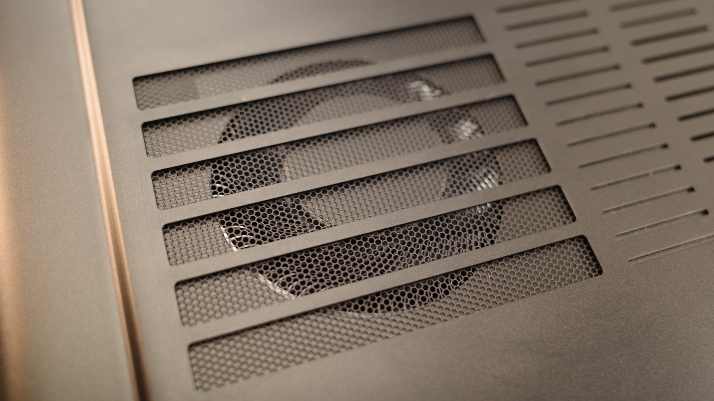
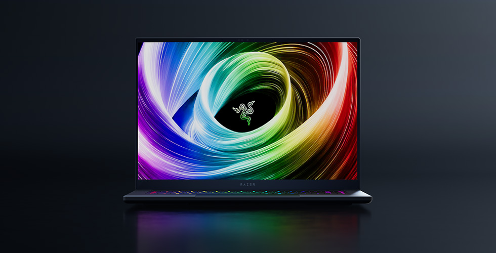

The Razer Blade 16 (2025) is a bold reinvention of Razer’s flagship gaming laptop, blending a strikingly thin chassis with NVIDIA’s top-tier GeForce RTX 5090 Laptop GPU and AMD’s Ryzen AI 9 HX 370 processor. Designed to compete with the likes of the ASUS ROG Zephyrus G16 and Alienware’s Area-51, this laptop prioritizes portability and premium aesthetics while delivering high-end performance for gamers and creators. After extensive testing—running benchmarks, gaming, and creative workloads—I’ve evaluated whether this sleek machine justifies its $4,499-$4,899 price tag and how it stacks up in the competitive 2025 gaming laptop market. Here’s the full review.
Razer has shaved the Blade 16 down to a remarkable 0.59 inches at its thinnest point (0.69 inches at its thickest), making it 30% slimmer and 15% lighter (4.6 lbs) than its 2024 predecessor. The CNC-milled aluminum unibody, finished in a matte black anodized coating, exudes a MacBook-like sophistication, with the glowing green Razer logo on the lid adding a touch of gaming flair. It’s a fingerprint magnet but cleans up easily, maintaining its sleek, professional look.
The chassis feels rock-solid, with no flex in the keyboard deck or lid. At 13.98 x 9.86 inches, it slips effortlessly into a backpack, rivaling ultrabooks in portability while packing far more power. The redesigned thermal hood and vapor chamber cooling system are engineering marvels, allowing such a slim profile to house the RTX 5090 without compromising performance—though not without some trade-offs, as we’ll explore later. The minimalist design, with RGB lighting confined to the per-key Chroma keyboard, ensures it’s as at home in a boardroom as it is at a LAN party.
Ports are plentiful: two USB-C 4.0 (40Gbps, DisplayPort, Power Delivery), two USB-A 3.2 Gen 2, HDMI 2.1, a 3.5mm audio jack, an SDXC card reader, and a Kensington lock. The lack of Thunderbolt 4 is a minor disappointment, and Ethernet requires a USB-C adapter, but the port selection is otherwise robust. The USB-C ports connect via the iGPU, reducing GPU load for external displays, while HDMI ties directly to the RTX 5090.
The 16-inch QHD+ (2560x1600) OLED panel, running at 240Hz, is a standout feature. With 100% DCI-P3 coverage, 0.2ms response time, and factory-calibrated color profiles (P3 and sRGB), it delivers vibrant, accurate visuals for gaming and creative work. The deep blacks and infinite contrast make games like Cyberpunk 2077 and Black Myth: Wukong pop, while the 240Hz refresh rate ensures silky-smooth motion in fast-paced titles like Fortnite. NVIDIA’s Advanced Optimus and DLSS 4 maximize frame rates, leveraging the RTX 5090’s power efficiently.
However, the display’s 400-nit peak brightness (slightly higher in HDR) is underwhelming for an OLED, especially in bright environments, and HDR performance feels lackluster compared to mini-LED panels on rivals like the MSI Titan 18 HX. The absence of a 4K option is also a missed opportunity, given the RTX 5090’s 4K gaming capabilities. Still, for QHD+ gaming and content creation, this OLED is among the best, though it’s closely matched by the Gigabyte Aorus Master 16’s panel.
The Razer Blade 16 (2025) pairs the NVIDIA GeForce RTX 5090 Laptop GPU (24GB GDDR7 VRAM, 155W TGP, up to 175W with Dynamic Boost) with the AMD Ryzen AI 9 HX 370 (12 cores, 24 threads, 5.1GHz max boost, 80W TDP). My test unit featured 32GB LPDDR5X-8000 RAM and a 2TB PCIe 4.0 SSD, with options up to 64GB RAM and 4TB storage. This configuration, priced at $4,499, is a premium setup, but lower-tier models with RTX 5070 Ti or 5080 start at $2,999.
Gaming Benchmarks
Compared to the RTX 4090 Blade 16 (2024), the RTX 5090 offers a modest 4-7% raw performance boost in synthetic benchmarks like 3DMark Time Spy, with gains up to 13% in newer tests like Steel Nomad. However, DLSS 4 and Multi Frame Generation provide up to 2x frame rate improvements in supported titles, making the upgrade noticeable. The 24GB VRAM is a boon for memory-hungry games and 4K textures, future-proofing the laptop.
The Ryzen AI 9 HX 370, while efficient, is a step down from the Intel Core i9-14900HX in last year’s model, with a lower TDP (80W vs. 120W). It still outperforms the ASUS Zephyrus G16’s Core Ultra 9 185H in multi-core tasks but lags behind Intel’s Core Ultra 9 275HX in thicker laptops like the Alienware Area-51. For QHD+ gaming, CPU bottlenecks were minimal, but 4K workloads occasionally showed slight constraints.
Creative Workloads
In Blender 4.2 (Cycles rendering), the RTX 5090 completed a complex scene 10% faster than the RTX 4090, thanks to its larger VRAM and AI optimizations. Adobe Premiere Pro 4K video exports were swift, with the GPU’s NVIDIA Studio drivers ensuring stability. The SSD’s 7GB/s read speeds made project loading near-instantaneous. The Ryzen’s Neural Processing Unit (NPU, 50 TOPS) supports AI workflows like Windows Copilot+, though real-world applications remain limited.
Everyday Performance
Windows 11 (Copilot+ certified) ran flawlessly, with Razer Synapse offering intuitive control over performance modes (Silent, Balanced, Performance) and per-key RGB lighting. Multitasking—Chrome with 30 tabs, Discord, and Photoshop—was seamless, with the 32GB RAM and 12-core CPU handling everything effortlessly. The laptop’s 280W GaN charger is compact but necessary for peak performance.
Razer’s vapor chamber cooling and redesigned thermal hood keep thermals in check, with GPU temps averaging 76°C and CPU at 80°C under load. Surface temperatures reached the mid-40s°C on the keyboard deck, warm but not uncomfortable. However, the slim chassis limits cooling capacity compared to thicker laptops like the Alienware Area-51, which sustain higher TGPs (175W) with quad fans.
Fan noise is noticeable during gaming, hitting 48dB, but quieter than last year’s model. In Silent mode, it’s nearly inaudible for light tasks. Razer’s optional Laptop Cooling Pad ($150) boosts TGP to 175W and lowers GPU temps by 9°C, but its loud fans detract from the experience. Overall, thermals are impressive for such a thin design, though sustained 4K workloads push the limits.
The 90Wh battery (smaller than last year’s 95.2Wh) delivers surprising longevity thanks to the RTX 5090’s efficiency and the Ryzen’s low power draw. I averaged 8 hours for light productivity (web browsing, 50% brightness) and 1 hour 20 minutes for gaming with Battery Boost enabled, which drops to 60Hz. This is a significant improvement over the Alienware Area-51’s 2-hour max, though it’s still not a true all-day machine.
The Blade 16 (2025) with RTX 5090, Ryzen AI 9 HX 370, 32GB RAM, and 2TB SSD retails for $4,499, with the maxed-out version (64GB RAM, 4TB SSD) at $4,899. This is $200-$450 more than the 2024 RTX 4090 model at launch, reflecting the new GPU and slimmer design. Lower configs with RTX 5070 Ti or 5080 start at $2,999, offering better value.
Compared to the Alienware Area-51 (RTX 5090, $3,799-$4,799), the Blade is pricier for similar specs but wins on portability. The ASUS ROG Zephyrus G16 (RTX 5080, $3,799) is cheaper and nearly as thin but uses a lower-TGP GPU. The MSI Titan 18 HX (RTX 5090, mini-LED) offers a better display for a similar price but is bulkier. The Blade’s premium build, OLED, and slimness justify the cost for those prioritizing portability, but budget-conscious buyers may find better performance-per-dollar elsewhere.
The Razer Blade 16 (2025) with RTX 5090 is a triumph of engineering, cramming flagship performance into a chassis thinner than many ultrabooks. Its OLED display, robust build, and impressive battery life make it a versatile choice for gamers and creators who value portability without sacrificing power. The RTX 5090’s DLSS 4 and 24GB VRAM ensure it’s ready for future titles, while the Ryzen AI 9 HX 370 handles most tasks admirably.
However, the steep price, modest generational performance gains, and lack of a 4K or mini-LED display hold it back from perfection. Thicker laptops like the Alienware Area-51 or MSI Titan 18 HX squeeze more raw power from the RTX 5090, and cheaper RTX 5080 models offer nearly identical gaming performance. If you crave a premium, portable gaming laptop that doubles as a workstation, the Blade 16 is among the best. But for pure performance or value, alternatives may edge it out.
The Razer Blade 16 (2025) with RTX 5090 scores 8.7/10 for its slim 0.59-inch design, vibrant QHD+ OLED, and top-tier performance, ideal for portable gaming and creative work. Its RTX 5090 with DLSS 4 and 8-hour battery life shine, but the $4,499-$4,899 price, 400-nit brightness, and minor CPU/thermal limits cap the score. It outranks the Alienware Area-51 (8.5/10) for portability and display but misses a 9.0 due to cost and lack of 4K/mini-LED.
Comment Section